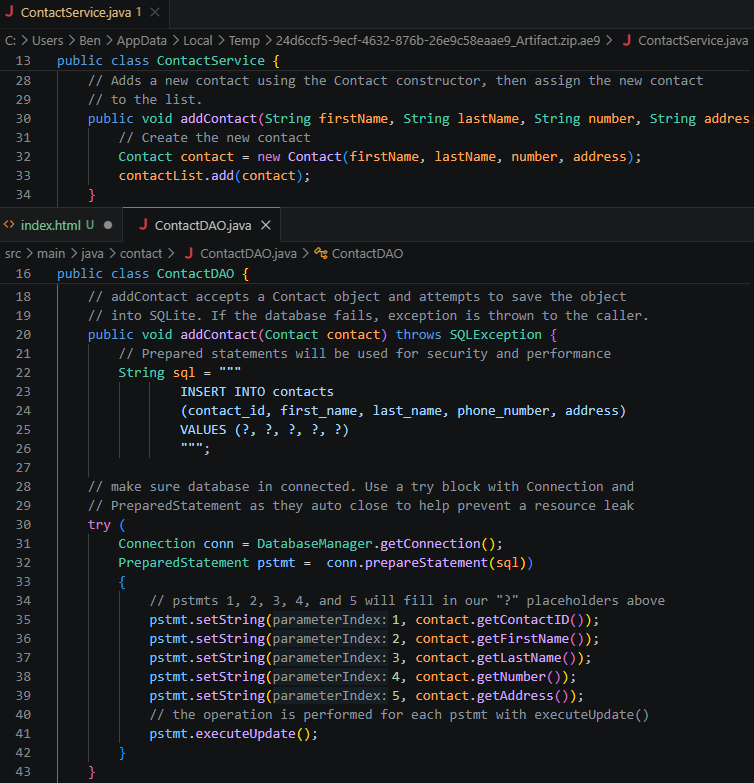

The top section of code is from the artifact while the bottom is from the enhanced file. Originally, ContactService.java handled the CRUD as an arrayList was used instead of a database for storing the objects. With the implementation of a persistent database, a ContactServiceDAO class was created to handle the SQL commands and and clean up the ContactService class. In the DAO class, appropriate secuirty measures were taken such as using prepared statements to help proectect against attacks.
